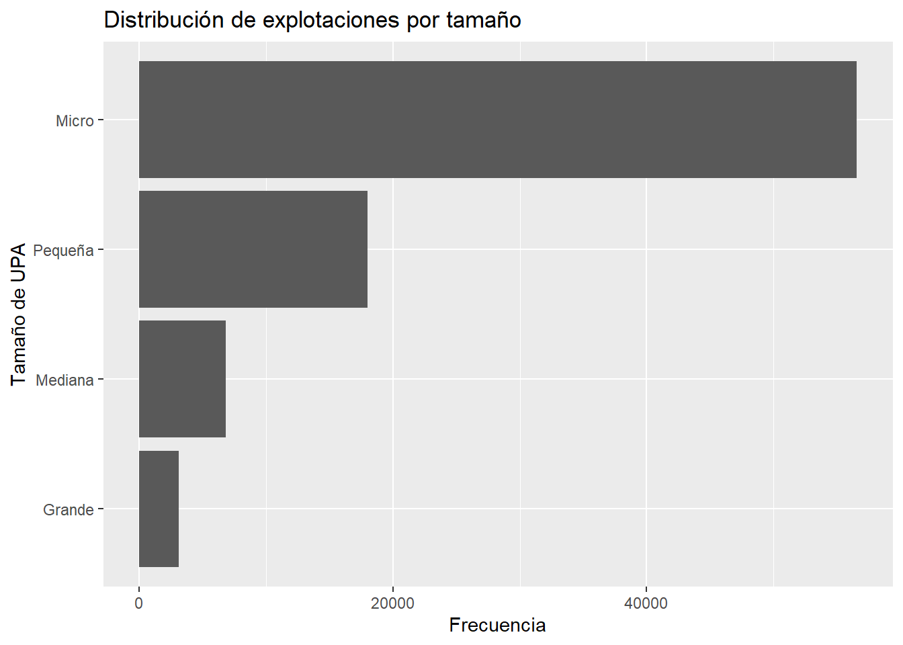
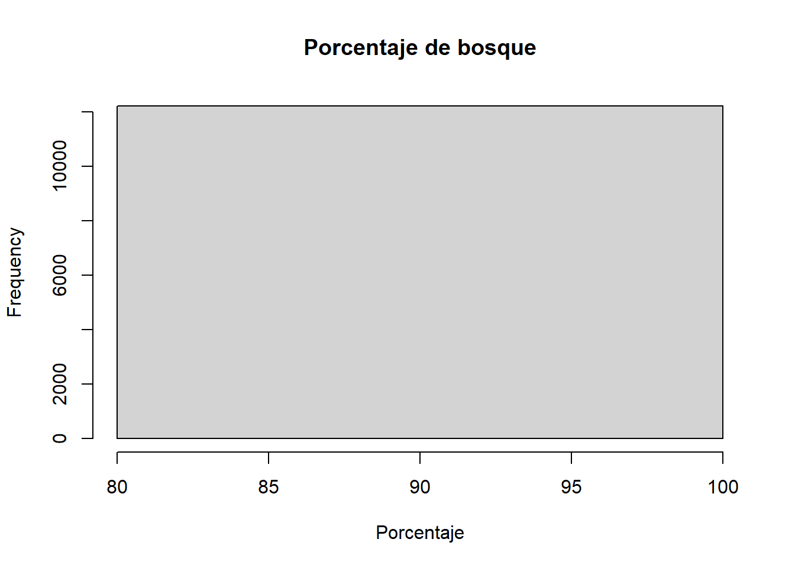

library(dplyr)
library(haven)
library(here)
library(knitr)
library(ggplot2)
sunac <- readRDS(
here(
"datos",
"procesado",
"ESPAC_2025",
"sunac_limpio.rds"
)
)15 Transformación de datos
Objetivos de aprendizaje
Al finalizar este capítulo, el lector será capaz de:
- Comprender el papel de la transformación de datos dentro de la investigación reproducible.
- Diferenciar entre datos originales y variables analíticas.
- Seleccionar variables relevantes para el análisis.
- Transformar variables etiquetadas provenientes de SPSS.
- Crear nuevas variables mediante reglas de investigación.
- Construir indicadores derivados.
- Generar una base analítica lista para análisis estadístico y econométrico.
- Documentar adecuadamente las transformaciones realizadas.
15.1 Introducción
Una vez que los datos han sido importados y limpiados, el siguiente paso consiste en transformarlos en información útil para responder preguntas de investigación.
Las bases de datos originales suelen contener variables diseñadas para procesos de captura, validación y almacenamiento de información. Sin embargo, estas variables no siempre resultan adecuadas para el análisis estadístico o econométrico.
La transformación de datos constituye el proceso mediante el cual los datos originales se convierten en variables analíticas capaces de describir fenómenos, construir indicadores, contrastar hipótesis y estimar modelos estadísticos (Peng, 2020; Wickham, 2014).
En investigación reproducible todas las transformaciones deben realizarse mediante código documentado, evitando modificaciones manuales sobre los archivos originales (Gandrud, 2015; Peng, 2011).
Durante este capítulo trabajaremos con información real de la Encuesta de Superficie y Producción Agropecuaria Continua (ESPAC) 2025.
15.2 ¿Qué significa transformar datos?
Transformar datos implica modificar la estructura, formato o contenido de una variable para facilitar su interpretación y análisis.
En términos prácticos, transformar datos puede significar:
- Cambiar el tipo de una variable.
- Recodificar categorías.
- Crear indicadores.
- Construir índices.
- Agregar registros.
- Generar nuevas variables derivadas.
La transformación constituye el puente entre la preparación de datos y el análisis estadístico.
Mientras la limpieza busca identificar y corregir problemas potenciales de calidad, la transformación busca convertir los datos en variables útiles para responder preguntas de investigación.
15.3 Cargando la base procesada
Trabajaremos con la base generada en el capítulo anterior.
15.4 Conociendo la base de trabajo
Antes de realizar cualquier transformación es recomendable recordar las dimensiones de la información disponible.
data.frame(
Registros = nrow(sunac),
Variables = ncol(sunac)
) |>
kable()| Registros | Variables |
|---|---|
| 84538 | 30 |
La salida muestra la cantidad de observaciones y variables disponibles para el análisis.
En el caso de la ESPAC observamos una base de gran tamaño que contiene información sobre uso del suelo, superficie, tenencia y características territoriales.
También podemos visualizar rápidamente la estructura general de la base.
glimpse(sunac)Rows: 84,538
Columns: 30
$ Identificador <chr> "01135101000330001", "01135101000330001", "0113510100033…
$ ual_prov <chr+lbl> "01", "01", "01", "01", "01", "01", "01", "01", "01"…
$ ual_estr <chr> "01", "01", "01", "01", "01", "01", "01", "01", "01", "0…
$ ual_segm <chr> "00033", "00033", "00033", "00033", "00103", "00103", "0…
$ al_ncues <chr> "0001", "0001", "0001", "9999", "0001", "0001", "0002", …
$ su_numl <dbl> 1, 2, 3, 1, 1, 2, 1, 2, 1, 2, 3, 4, 5, 6, 7, 8, 9, 10, 1…
$ rc_clacul <dbl+lbl> 958, 958, 962, 962, 410, 958, 410, 958, 478, 751, 78…
$ su_numt <dbl> 1, 2, 3, 1, 1, 2, 1, 2, 1, 2, 3, 4, 5, 6, 7, 8, 9, 10, 1…
$ su_k202ha <dbl> 9.00, 9.00, 9.00, 0.40, 5.50, 1.50, 4.00, 3.00, 0.19, 0.…
$ su_categoria <dbl+lbl> 8, 8, 10, 10, 1, 8, 1, 8, 1, 5, 5, 5, 5, …
$ su_tenencia <fct> DUEÑO, DUEÑO, DUEÑO, DUEÑO, DUEÑO, DUEÑO, DUEÑO, DUEÑO, …
$ ual_trs <dbl+lbl> 1, 1, 1, 1, 1, 1, 1, 1, 1, 1, 1, 1, 1, 1, 1, 1, 1, 1…
$ ual_trc <dbl+lbl> NA, NA, NA, NA, NA, NA, NA, NA, NA, NA, NA, NA, NA, …
$ ual_tro <dbl+lbl> NA, NA, NA, NA, NA, NA, NA, NA, NA, NA, NA, NA, NA, …
$ ual_znd <dbl+lbl> NA, NA, NA, NA, NA, NA, NA, NA, NA, NA, NA, NA, NA, …
$ ual_tn <dbl+lbl> 4, 4, 4, 4, 4, 4, 4, 4, 4, 4, 4, 4, 4, 4, 4, 4, 4, 4…
$ us_k301ha <dbl> NA, NA, NA, NA, 2.5763, NA, 3.3235, NA, 0.1819, NA, NA, …
$ us_k302ha <dbl> NA, NA, NA, NA, NA, NA, NA, NA, NA, NA, NA, NA, NA, NA, …
$ us_k303ha <dbl> NA, NA, NA, NA, NA, NA, NA, NA, NA, NA, NA, NA, NA, NA, …
$ us_k304ha <dbl> NA, NA, NA, NA, NA, NA, NA, NA, NA, NA, NA, NA, NA, NA, …
$ us_k305ha <dbl> NA, NA, NA, NA, NA, NA, NA, NA, NA, 0.0932, 0.0921, 0.04…
$ us_k306ha <dbl> NA, NA, NA, NA, NA, NA, NA, NA, NA, NA, NA, NA, NA, NA, …
$ us_k307ha <dbl> NA, NA, NA, NA, NA, NA, NA, NA, NA, NA, NA, NA, NA, NA, …
$ us_k308ha <dbl> 2.7616, 0.7581, NA, NA, NA, 0.8191, NA, 2.2811, NA, NA, …
$ us_k309ha <dbl> NA, NA, NA, NA, NA, NA, NA, NA, NA, NA, NA, NA, NA, NA, …
$ us_k310ha <dbl> NA, NA, 5.1941, 0.2862, NA, NA, NA, NA, NA, NA, NA, NA, …
$ us_transiha <dbl> NA, NA, NA, NA, NA, NA, NA, NA, NA, NA, NA, NA, NA, NA, …
$ us_montesha <dbl> 2.7616, 0.7581, NA, NA, NA, 0.8191, NA, 2.2811, NA, NA, …
$ supertotal <dbl> 2.7616, 0.7581, 5.1941, 0.2862, 2.5763, 0.8191, 3.3235, …
$ fact_exp_fin <dbl> 66.37009, 66.37009, 66.37009, 66.37009, 66.37009, 66.370…La función glimpse() permite identificar los nombres de las variables, sus tipos de datos y algunos ejemplos de valores observados.
15.5 De datos originales a variables analíticas
Considere la variable:
su_tenenciaEsta variable almacena la forma de tenencia de la tierra.
Originalmente se encuentra codificada mediante valores numéricos etiquetados.
class(sunac$su_tenencia)[1] "factor"La salida muestra que la variable fue importada como:
haven_labelledEste formato es adecuado para preservar la información original del archivo SPSS, pero no siempre resulta conveniente para análisis posteriores.
Por esta razón, uno de los primeros pasos de transformación consiste en convertir variables etiquetadas a factores.
15.6 Selección de variables relevantes
Las bases oficiales suelen contener decenas o incluso cientos de variables.
Sin embargo, no todas son necesarias para responder una pregunta específica de investigación.
Supongamos que deseamos analizar la relación entre superficie, tenencia y territorio.
Podemos construir una base reducida.
sunac_reducido <- sunac |>
select(
Identificador,
ual_prov,
su_tenencia,
su_categoria,
supertotal,
fact_exp_fin
)
glimpse(sunac_reducido)Rows: 84,538
Columns: 6
$ Identificador <chr> "01135101000330001", "01135101000330001", "0113510100033…
$ ual_prov <chr+lbl> "01", "01", "01", "01", "01", "01", "01", "01", "01"…
$ su_tenencia <fct> DUEÑO, DUEÑO, DUEÑO, DUEÑO, DUEÑO, DUEÑO, DUEÑO, DUEÑO, …
$ su_categoria <dbl+lbl> 8, 8, 10, 10, 1, 8, 1, 8, 1, 5, 5, 5, 5, …
$ supertotal <dbl> 2.7616, 0.7581, 5.1941, 0.2862, 2.5763, 0.8191, 3.3235, …
$ fact_exp_fin <dbl> 66.37009, 66.37009, 66.37009, 66.37009, 66.37009, 66.370…La selección de variables facilita el trabajo analítico y mejora la legibilidad del código.
Además, reduce el consumo de memoria cuando se trabaja con bases de gran tamaño (Peng, 2020).
15.7 Renombrando variables
Muchas operaciones estadísticas utilizan nombres abreviados difíciles de interpretar.
Por esta razón, es recomendable utilizar nombres descriptivos.
sunac_reducido <- sunac_reducido |>
rename(
provincia = ual_prov,
tenencia = su_tenencia,
categoria = su_categoria,
superficie_total = supertotal
)
names(sunac_reducido)[1] "Identificador" "provincia" "tenencia" "categoria"
[5] "superficie_total" "fact_exp_fin" Observe cómo los nombres resultan ahora más intuitivos.
Esta práctica facilita la lectura del código y reduce errores durante etapas posteriores (Wilson et al., 2017).
15.8 Transformación de variables etiquetadas
Las variables provenientes de SPSS conservan etiquetas originales.
Podemos examinarlas mediante:
attributes(sunac$su_tenencia)$labelsNULLLas categorías corresponden a distintas formas de tenencia de la tierra registradas por el INEC.
Para facilitar el análisis transformaremos la variable en un factor.
sunac <- sunac |>
mutate(
su_tenencia =
haven::as_factor(su_tenencia),
su_categoria =
haven::as_factor(su_categoria)
)Verificamos el resultado:
class(sunac$su_tenencia)[1] "factor"class(sunac$su_categoria)[1] "factor"Ahora ambas variables pueden utilizarse directamente en tablas, gráficos y modelos estadísticos.
15.9 Explorando las categorías transformadas
Una vez realizada la transformación podemos observar la distribución de frecuencias.
sunac |>
count(su_tenencia) |>
arrange(desc(n))# A tibble: 10 × 2
su_tenencia n
<fct> <int>
1 DUEÑO 71391
2 HERENCIA 5695
3 ARRENDATARIO 2815
4 USUFRUCTO 1150
5 COMUNERO 1038
6 OTRO 1020
7 APARCERÍA O AL PARTIR 789
8 LITIGIO 286
9 POSECIÓN 222
10 INVASIÓN 132La tabla muestra la cantidad de observaciones registradas para cada forma de tenencia.
La interpretación de esta distribución resulta mucho más sencilla que trabajar con códigos numéricos.
15.10 Transformación de variables geográficas
La variable ual_prov contiene códigos provinciales.
Si la base conserva etiquetas podemos transformarla directamente.
sunac <- sunac |>
mutate(
provincia =
haven::as_factor(ual_prov)
)Podemos verificar el resultado.
class(sunac$provincia)[1] "factor"La nueva variable permitirá realizar análisis territoriales utilizando nombres de provincias en lugar de códigos numéricos.
15.11 Creación de nuevas variables
Uno de los principales objetivos de la transformación consiste en construir variables que no existen originalmente en la base de datos.
Estas nuevas variables permiten representar conceptos analíticos que facilitan la interpretación de los resultados y responden de manera más directa a las preguntas de investigación.
Por ejemplo, la variable supertotal registra la superficie total observada en cada registro.
summary(sunac$supertotal) Min. 1st Qu. Median Mean 3rd Qu. Max.
0.000e+00 8.160e-02 3.739e-01 6.984e+00 1.649e+00 2.147e+04 Aunque esta variable es informativa, en muchos casos resulta más útil trabajar con categorías de tamaño.
15.12 Construcción de categorías de tamaño de explotación
La clasificación de explotaciones agropecuarias por tamaño constituye una práctica habitual en estudios agrícolas y rurales.
Podemos crear una nueva variable denominada tamano_upa.
sunac <- sunac |>
mutate(
tamano_upa =
case_when(
supertotal < 1 ~ "Micro",
supertotal < 5 ~ "Pequeña",
supertotal < 20 ~ "Mediana",
TRUE ~ "Grande"
)
)Verifiquemos la distribución de la nueva variable.
sunac |>
count(tamano_upa) |>
arrange(desc(n))# A tibble: 4 × 2
tamano_upa n
<chr> <int>
1 Micro 56572
2 Pequeña 18014
3 Mediana 6846
4 Grande 3106La tabla permite identificar la estructura productiva observada en la encuesta.
Esta transformación convierte una variable continua en una categoría fácilmente interpretable.
15.13 Visualizando el tamaño de las explotaciones
Podemos representar gráficamente la distribución de las categorías creadas.
sunac |>
count(tamano_upa) |>
ggplot(
aes(
x = reorder(tamano_upa, n),
y = n
)
) +
geom_col() +
coord_flip() +
labs(
x = "Tamaño de UPA",
y = "Frecuencia",
title = "Distribución de explotaciones por tamaño"
)
La visualización facilita la comprensión de la estructura de la población estudiada.
15.14 Construcción de variables binarias
Las variables binarias resultan extremadamente útiles en análisis descriptivos y econométricos.
Estas variables representan únicamente dos categorías.
Por ejemplo:
Sí / No
Presencia / Ausencia
1 / 0Una variable interesante en la ESPAC es:
us_monteshaque representa superficie de monte o bosque.
15.15 Indicador de presencia de bosque
Podemos construir una variable que indique si existe o no bosque en el registro.
sunac <- sunac |>
mutate(
tiene_bosque =
if_else(
us_montesha > 0,
"Sí",
"No",
missing = "No"
)
)Analicemos la distribución resultante.
table(sunac$tiene_bosque)
No Sí
72324 12214 La nueva variable simplifica considerablemente la interpretación.
En lugar de analizar hectáreas específicas, podemos distinguir rápidamente entre productores con y sin cobertura boscosa.
15.16 Indicador de cultivos transitorios
También podemos crear una variable relacionada con actividades agrícolas.
sunac <- sunac |>
mutate(
tiene_transitorios =
if_else(
us_transiha > 0,
"Sí",
"No",
missing = "No"
)
)Verificamos el resultado.
table(sunac$tiene_transitorios)
No Sí
72965 11573 Este tipo de indicadores resulta especialmente útil en análisis comparativos.
15.17 Construcción de indicadores porcentuales
En investigación aplicada suele ser más informativo trabajar con proporciones que con valores absolutos.
Por ejemplo, una explotación con 5 hectáreas de bosque puede ser muy diferente según su superficie total.
Podemos construir un indicador porcentual.
sunac <- sunac |>
mutate(
pct_bosque =
(us_montesha / supertotal) * 100
)Analizamos su distribución.
summary(sunac$pct_bosque) Min. 1st Qu. Median Mean 3rd Qu. Max. NAs
100 100 100 100 100 100 72324 Este indicador permite comparar explotaciones de distinto tamaño utilizando una misma escala.
15.18 Visualizando indicadores porcentuales
hist(
sunac$pct_bosque,
main = "Porcentaje de bosque",
xlab = "Porcentaje",
breaks = 30
)
La visualización facilita la identificación de patrones de distribución.
15.19 Transformaciones mediante reglas de clasificación
Las transformaciones frecuentemente responden a necesidades específicas de investigación.
Supongamos que queremos diferenciar entre pequeños productores y el resto.
sunac <- sunac |>
mutate(
grupo_tamano =
case_when(
supertotal < 5 ~ "Pequeños productores",
TRUE ~ "Medianos y grandes productores"
)
)Analizamos la distribución.
table(sunac$grupo_tamano)
Medianos y grandes productores Pequeños productores
9952 74586 Las categorías agregadas permiten simplificar la interpretación cuando existen demasiados grupos.
15.20 Explorando variables derivadas
Una buena práctica consiste en verificar inmediatamente los resultados de cada transformación.
sunac |>
select(
supertotal,
tamano_upa,
grupo_tamano
) |>
head(10)# A tibble: 10 × 3
supertotal tamano_upa grupo_tamano
<dbl> <chr> <chr>
1 2.76 Pequeña Pequeños productores
2 0.758 Micro Pequeños productores
3 5.19 Mediana Medianos y grandes productores
4 0.286 Micro Pequeños productores
5 2.58 Pequeña Pequeños productores
6 0.819 Micro Pequeños productores
7 3.32 Pequeña Pequeños productores
8 2.28 Pequeña Pequeños productores
9 0.182 Micro Pequeños productores
10 0.0932 Micro Pequeños productores Esta inspección permite validar que las reglas aplicadas generan resultados coherentes.
15.21 Construcción de indicadores para análisis posteriores
Una vez transformadas las variables podemos generar una tabla resumen.
sunac |>
select(
tamano_upa,
tiene_bosque,
tiene_transitorios
) |>
summary() tamano_upa tiene_bosque tiene_transitorios
Length :84538 Length :84538 Length :84538
N.unique : 4 N.unique : 2 N.unique : 2
N.blank : 0 N.blank : 0 N.blank : 0
Min.nchar: 5 Min.nchar: 2 Min.nchar: 2
Max.nchar: 7 Max.nchar: 2 Max.nchar: 2 Observe cómo ahora disponemos de variables listas para análisis descriptivos, visualizaciones y modelos estadísticos.
15.22 Importancia de las transformaciones reproducibles
Todas las transformaciones realizadas hasta este punto han sido ejecutadas mediante código.
Esto significa que cualquier investigador puede reproducir exactamente los mismos resultados utilizando la misma base de datos.
La reproducibilidad constituye una condición esencial para garantizar transparencia y credibilidad científica (Gandrud, 2015; Peng, 2011).
15.23 Buenas prácticas durante la transformación
Durante el proceso de transformación se recomienda:
- Crear nuevas variables en lugar de sobrescribir variables originales.
- Utilizar nombres descriptivos.
- Documentar cada decisión tomada.
- Verificar resultados inmediatamente después de cada transformación.
- Conservar versiones intermedias de trabajo.
- Mantener intactos los datos originales.
Estas prácticas facilitan la trazabilidad y reducen errores analíticos.
15.24 Agregación de información
Hasta este momento hemos trabajado a nivel de registros individuales.
Sin embargo, durante el capítulo anterior identificamos que la base contiene más registros que identificadores únicos.
Esto significa que una misma unidad de producción agropecuaria puede aparecer varias veces dentro del archivo.
Verifiquemos nuevamente esta situación.
nrow(sunac)[1] 84538length(unique(sunac$Identificador))[1] 38228La diferencia entre ambas cifras indica que existen múltiples registros asociados a un mismo productor o unidad productiva.
En muchos análisis será necesario trabajar a nivel de productor y no a nivel de registro.
15.25 Construcción de una base agregada por productor
Podemos resumir la información utilizando el identificador único.
upa <- sunac |>
group_by(Identificador) |>
summarise(
superficie_total =
sum(
supertotal,
na.rm = TRUE
),
superficie_bosque =
sum(
us_montesha,
na.rm = TRUE
),
superficie_transitorios =
sum(
us_transiha,
na.rm = TRUE
)
)Analicemos las dimensiones de la nueva base.
data.frame(
Registros = nrow(upa),
Variables = ncol(upa)
) |>
knitr::kable()| Registros | Variables |
|---|---|
| 38228 | 4 |
Observe que ahora cada fila representa una unidad productiva única.
Esta transformación cambia completamente la unidad de análisis.
15.26 Explorando la base agregada
Podemos visualizar los primeros registros.
head(upa)# A tibble: 6 × 4
Identificador superficie_total superficie_bosque superficie_transitorios
<chr> <dbl> <dbl> <dbl>
1 01015101094420001 2.40 0 0.296
2 01015101094420002 2.05 0 0.512
3 01015101094420003 2.66 0 0.295
4 01015101094420004 0.693 0 0
5 01015101094420005 0.411 0 0.19
6 01015101094420006 0.617 0 0.192Ahora cada observación resume la información disponible para un productor específico.
La agregación constituye una de las transformaciones más frecuentes en investigación aplicada, especialmente cuando se trabaja con encuestas complejas y registros múltiples (Wickham, 2014).
15.27 Construcción de indicadores agregados
A partir de las variables resumidas podemos generar nuevos indicadores.
Por ejemplo, el porcentaje de bosque por unidad productiva.
upa <- upa |>
mutate(
pct_bosque =
(superficie_bosque /
superficie_total) * 100
)Analizamos su comportamiento.
summary(upa$pct_bosque) Min. 1st Qu. Median Mean 3rd Qu. Max.
0.00 0.00 0.00 16.23 4.00 100.00 Este indicador permite comparar productores independientemente de su tamaño.
15.28 Clasificación de productores según tamaño
También podemos clasificar las unidades productivas agregadas.
upa <- upa |>
mutate(
tamano_upa =
case_when(
superficie_total < 1 ~ "Micro",
superficie_total < 5 ~ "Pequeña",
superficie_total < 20 ~ "Mediana",
TRUE ~ "Grande"
)
)Verificamos la distribución.
upa |>
count(tamano_upa) |>
arrange(desc(n))# A tibble: 4 × 2
tamano_upa n
<chr> <int>
1 Micro 18477
2 Pequeña 10648
3 Mediana 6206
4 Grande 2897Esta clasificación será útil en análisis posteriores relacionados con estructura productiva.
15.29 Construcción de una base analítica
Una vez realizadas las transformaciones necesarias podemos construir una base diseñada específicamente para el análisis.
El objetivo consiste en conservar únicamente las variables relevantes para responder nuestras preguntas de investigación.
base_analitica <- sunac |>
select(
Identificador,
provincia,
su_tenencia,
tamano_upa,
grupo_tamano,
tiene_bosque,
tiene_transitorios,
pct_bosque,
supertotal,
fact_exp_fin
)Verificamos su estructura.
glimpse(base_analitica)Rows: 84,538
Columns: 10
$ Identificador <chr> "01135101000330001", "01135101000330001", "01135101…
$ provincia <fct> AZUAY, AZUAY, AZUAY, AZUAY, AZUAY, AZUAY, AZ…
$ su_tenencia <fct> DUEÑO, DUEÑO, DUEÑO, DUEÑO, DUEÑO, DUEÑO, DUEÑO, DU…
$ tamano_upa <chr> "Pequeña", "Micro", "Mediana", "Micro", "Pequeña", …
$ grupo_tamano <chr> "Pequeños productores", "Pequeños productores", "Me…
$ tiene_bosque <chr> "Sí", "Sí", "No", "No", "No", "Sí", "No", "Sí", "No…
$ tiene_transitorios <chr> "No", "No", "No", "No", "No", "No", "No", "No", "No…
$ pct_bosque <dbl> 100, 100, NA, NA, NA, 100, NA, 100, NA, NA, NA, NA,…
$ supertotal <dbl> 2.7616, 0.7581, 5.1941, 0.2862, 2.5763, 0.8191, 3.3…
$ fact_exp_fin <dbl> 66.37009, 66.37009, 66.37009, 66.37009, 66.37009, 6…La nueva base contiene variables interpretables y listas para análisis descriptivos y econométricos.
15.30 Explorando la base analítica
Podemos visualizar las primeras observaciones.
head(base_analitica)# A tibble: 6 × 10
Identificador provincia su_tenencia tamano_upa grupo_tamano tiene_bosque
<chr> <fct> <fct> <chr> <chr> <chr>
1 01135101000330001 " AZUAY" DUEÑO Pequeña Pequeños prod… Sí
2 01135101000330001 " AZUAY" DUEÑO Micro Pequeños prod… Sí
3 01135101000330001 " AZUAY" DUEÑO Mediana Medianos y gr… No
4 01135101000339999 " AZUAY" DUEÑO Micro Pequeños prod… No
5 01015701001030001 " AZUAY" DUEÑO Pequeña Pequeños prod… No
6 01015701001030001 " AZUAY" DUEÑO Micro Pequeños prod… Sí
# ℹ 4 more variables: tiene_transitorios <chr>, pct_bosque <dbl>,
# supertotal <dbl>, fact_exp_fin <dbl>Observe cómo las variables transformadas permiten comprender la información con mucha mayor facilidad que las variables originales codificadas.
15.31 Guardando los resultados
Una vez finalizado el proceso de transformación es recomendable almacenar la base resultante.
saveRDS(
base_analitica,
here(
"datos",
"procesado",
"ESPAC_2025",
"sunac_transformado.rds"
)
)El formato RDS conserva tipos de datos, factores y atributos propios de R.
Posteriormente podremos recuperar la información mediante:
base_analitica <- readRDS(
here(
"datos",
"procesado",
"ESPAC_2025",
"sunac_transformado.rds"
)
)Verificamos que la carga fue exitosa.
dim(base_analitica)[1] 84538 1015.32 Trazabilidad de las transformaciones
Uno de los principios fundamentales de la investigación reproducible consiste en que todas las transformaciones puedan reconstruirse completamente.
Las operaciones realizadas durante este capítulo incluyen:
- Selección de variables.
- Renombramiento de variables.
- Conversión de variables etiquetadas.
- Construcción de categorías.
- Creación de indicadores binarios.
- Generación de porcentajes.
- Agregación de registros.
- Construcción de bases analíticas.
Gracias al uso de scripts, cualquier investigador puede reproducir exactamente el mismo flujo de trabajo (Gandrud, 2015; Peng, 2011).
15.33 Validación de resultados
Antes de continuar con el análisis es recomendable verificar que las transformaciones producen resultados coherentes.
Por ejemplo:
summary(base_analitica$supertotal) Min. 1st Qu. Median Mean 3rd Qu. Max.
0.000e+00 8.160e-02 3.739e-01 6.984e+00 1.649e+00 2.147e+04 summary(base_analitica$pct_bosque) Min. 1st Qu. Median Mean 3rd Qu. Max. NAs
100 100 100 100 100 100 72324 También podemos revisar distribuciones.
table(base_analitica$tamano_upa)
Grande Mediana Micro Pequeña
3106 6846 56572 18014 table(base_analitica$tiene_bosque)
No Sí
72324 12214 Estas verificaciones permiten detectar errores tempranamente.
15.34 Transformación de datos y análisis estadístico
La calidad de cualquier análisis depende directamente de la calidad de las transformaciones realizadas previamente.
Variables mal definidas pueden conducir a interpretaciones erróneas y modelos estadísticos incorrectos.
Por esta razón, la etapa de transformación debe considerarse una parte fundamental del proceso científico y no una simple tarea operativa (Lowndes et al., 2017; Marwick et al., 2018).
15.35 Manos a la obra
Utilizando la base sunac_limpio.rds:
- Convierta las variables etiquetadas a factores.
- Cree una variable de tamaño de explotación.
- Construya un indicador de presencia de bosque.
- Calcule el porcentaje de bosque respecto a la superficie total.
- Agregue la información por productor.
- Construya una base analítica.
- Guarde la base transformada en formato RDS.
- Documente todas las transformaciones realizadas.
15.36 Resumen del capítulo
La transformación de datos constituye el proceso mediante el cual los datos originales se convierten en variables analíticas útiles para responder preguntas de investigación.
Durante este capítulo aprendimos a seleccionar variables, renombrarlas, transformar variables etiquetadas provenientes de SPSS, construir indicadores, generar categorías analíticas, agregar información y crear una base lista para análisis posteriores.
Todas estas transformaciones fueron realizadas mediante código reproducible, garantizando transparencia y trazabilidad en el flujo de trabajo.
En el siguiente capítulo abordaremos la evaluación de la calidad de los datos, donde aprenderemos a medir consistencia, integridad y confiabilidad de la información antes de iniciar análisis descriptivos y modelos estadísticos.